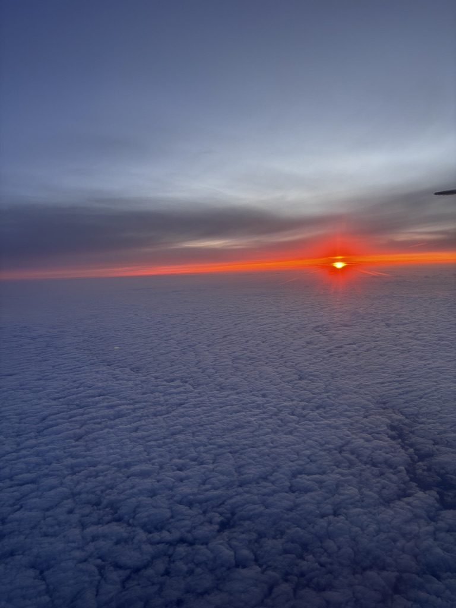
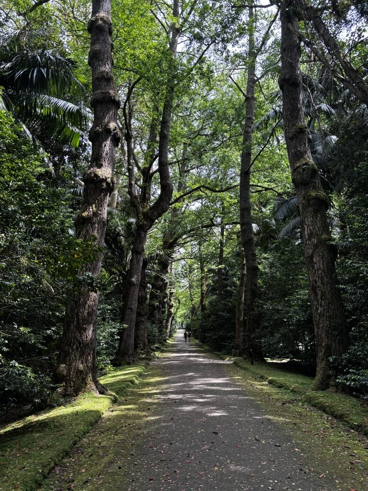
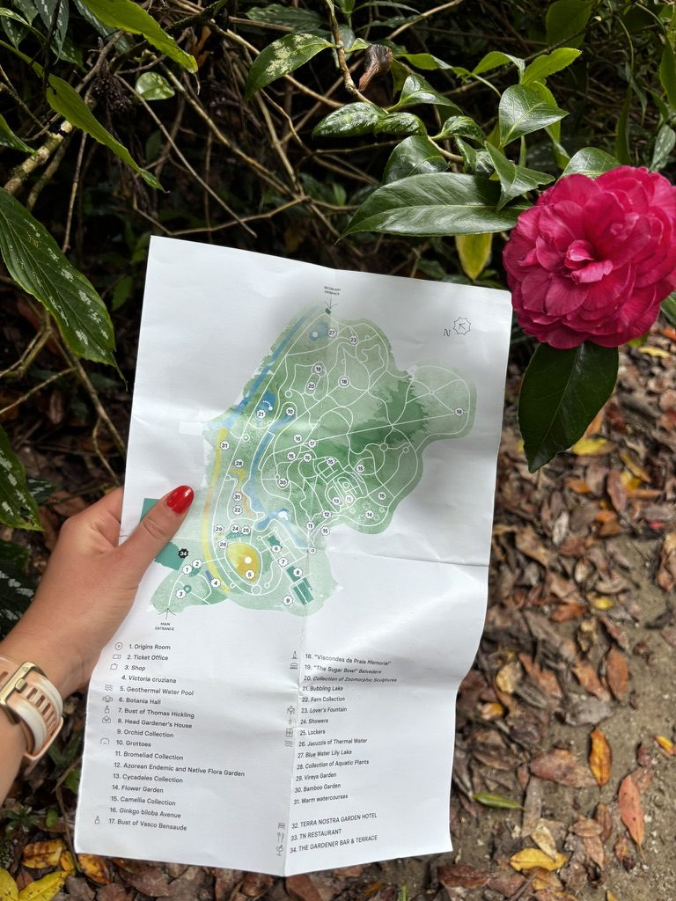
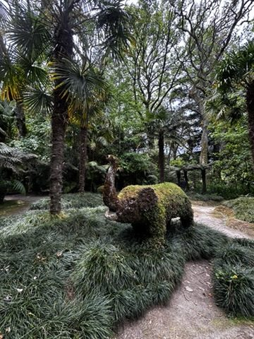
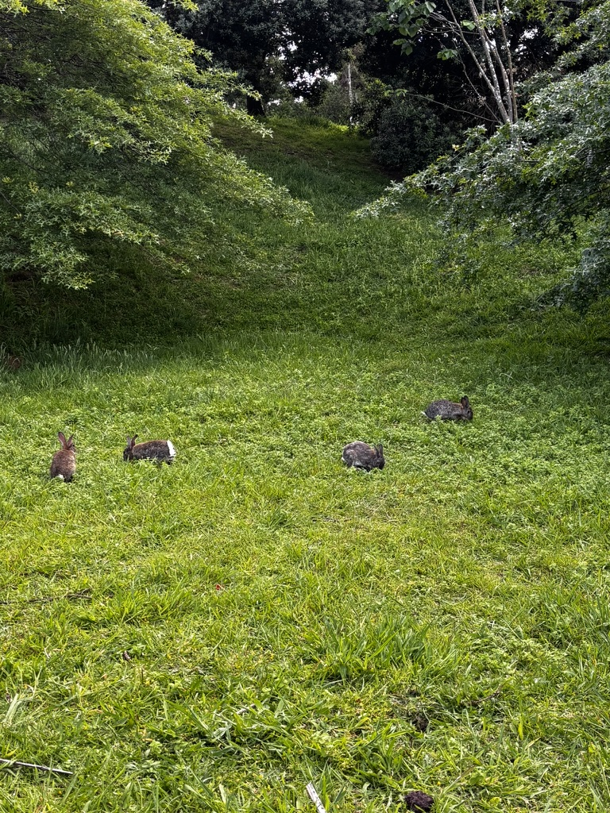
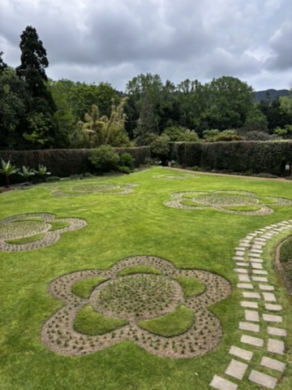
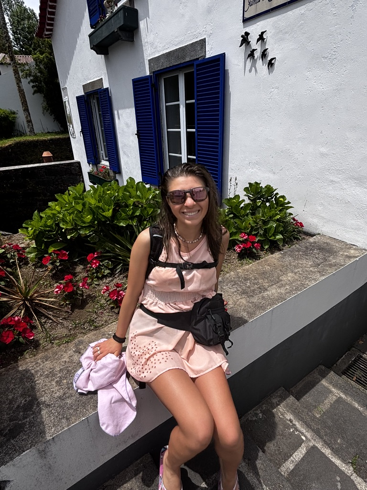
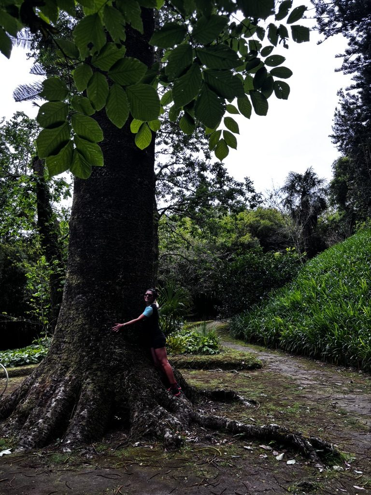
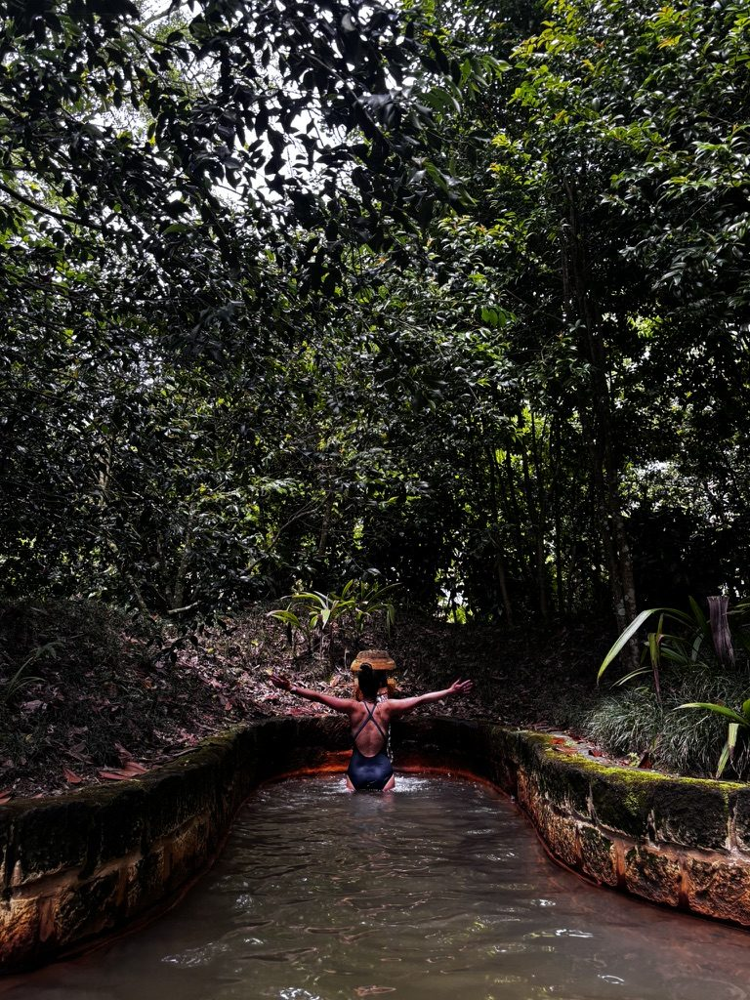

I watched the sunrise from the airplane window somewhere over the Atlantic. One of those mornings where the light comes in sideways and the clouds below turn pink and orange and you think: yes. This is the right direction to be going.

Somewhere over the Atlantic. The right direction.
I was heading to Sao Miguel for the first time. I'd heard the usual things — green, volcanic, dramatic, you need a car. I had booked nothing except the flight and a bed. I had two weeks and no plan. I was, in other words, in my preferred state of travel.
The welcome
When the plane descended and the island came into view, there was a rainbow. A full one, arching across the green hills like the island was deliberately making a point. I am not someone who reads signs into things. But I noted it.

Greeted with a rainbow. The island wasn't being subtle.
Sao Miguel is small and green in a way that still surprises you even once you've been there a few days. The green is almost aggressive. It doesn't look like a real colour. It looks like someone turned the saturation up and forgot to turn it back down.
Terra Nostra
On one of the first days, I went to Terra Nostra. If you haven't been: it is a botanical garden built around a thermal pool, and it is one of those places where you walk in and immediately understand why people come back to this island over and over.

Terra Nostra. Endless and beautiful. The kind of garden that makes you feel small in the best possible way.
The garden is old and the trees are enormous and the paths wind in a way that makes you feel slightly lost even when you're not. There is a hot thermal pool the colour of rust — the iron minerals stain everything, including your swimsuit, which nobody warns you about — and you float in it and look up at the trees and the sky and think: I am in the right place.
The parks here go on and on. You don't need a destination. You just need to keep walking.
Following the map
I spent a lot of time just walking. Not hiking — walking. Through parks, along paths, following a map that didn't always match what was actually there, which meant I ended up in places I wouldn't have found otherwise.

The map said go left. I went left. The map was correct for once.
There is a specific pleasure in wandering a place without an agenda. No viewpoint to reach by a certain time, no bus to catch, no checklist. Just moving through the landscape and seeing what turns up.

Nature and humans, working it out together. Someone built this. The island adopted it.
Rabbits
In the city park in Sao Miguel, there are rabbits. Wild ones, or at least semi-wild — they live in the park and do not seem particularly bothered by people. I sat on a bench and watched them for a long time. One came very close. We looked at each other. He decided I was boring and hopped away.

The rabbits of Sao Miguel. Unbothered. Thriving. Role models, honestly.
I am aware this is a small thing. But small things in travel matter. The rabbits made me laugh, which I needed after a long walk in the wrong direction. That counts.
The people
Somewhere along the way, I was reminded again — as I keep being reminded — that humans are actually great. Not all of them, not always, but often enough to notice. On this island, with this particular combination of landscape and slowness and the particular kind of traveller the Azores tends to attract, people were open in a way that felt easy.

Humans are great. I keep forgetting and then being reminded. The Azores was a good reminder.
Conversations happened. Plans changed because of them. That is, in my experience, how the best travel works.
The places that get you
There are places that just get you. Not because they're the most famous or the most photographed or the ones everyone puts on lists. They get you because something in the light or the air or the particular arrangement of things hits some internal frequency and you feel, in your whole body, something that functions like joy.

This one. This exact spot. Smiling with all of my being.
Sao Miguel has several of those. I found some by following the map. I found others by not following it. And I found one, the best one, by sitting very still next to a tree and waiting to see what happened next.

If you don't hug at least one tree in the Azores, did you really go?

Living my best life. The island helped.
I came back from this trip with very few plans made and a lot of things felt. Which, in retrospect, is the correct ratio.